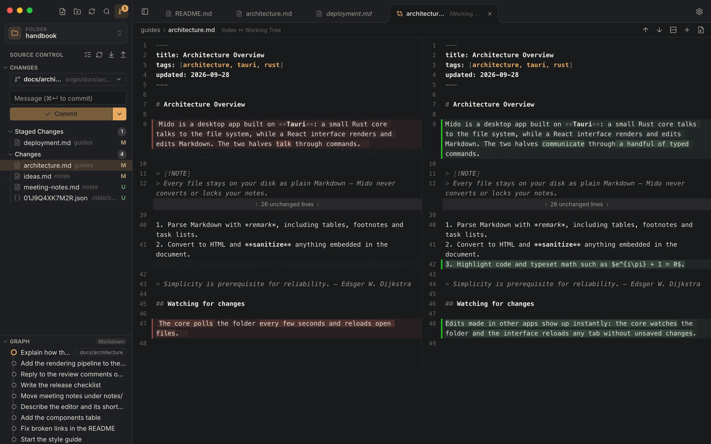

Tabs, the way you expect
A single click previews a file, a double click keeps it open. Drag to reorder, with undo history per tab.
Markdown viewer & editor for macOS
Write the way you would at home, with no noise and nothing in a hurry. Mido turns any folder of notes, docs and READMEs into calm, beautifully typeset pages.
Free · Your files stay plain Markdown on your disk

Distraction-free, typeset pages with a navigable outline.
Select any sentence and start a thread, shared with your team through git.
Source and preview side by side, scrolling in sync as you type.
A focused editor with Markdown and code highlighting.
Reading
Tables, task lists, footnotes, GitHub-style alerts, math and syntax-highlighted code render the moment you open a file. Frontmatter becomes a tidy card, and relative links and images just work.

Typography
Pick a reading style (Mido, GitHub, Academic or Minimal), then fine-tune fonts, text size, line height and page width. Use the bundled fonts or any font installed on your computer.

Comments
Select any sentence and comment on it. Threads sit beside the text, with replies, resolve and reopen,
signed with your git name. They're saved in a hidden .mido folder next to your documents, so a
commit and a push share them with everyone.
Source control
In a git repository, Mido shows what changed since the last commit, as VS Code does: stage files one by one, read each change side by side in calm colours, write the message and commit, then sync with one button. Nothing happens on its own: Mido only does what you click.

Themes
Eleven built-in themes, including VS Code and IntelliJ looks, plus your own: duplicate any theme, tweak its colours, and share it as JSON.
A single click previews a file, a double click keeps it open. Drag to reorder, with undo history per tab.
Browse, filter, create, rename and trash Markdown files. No database, no import, no lock-in.
Switch modes, tabs, the outline and settings without touching the mouse. ⌘B ⌘I ⌘K while writing.
Changes are saved as you type. Prefer to do it yourself? Turn it off and save with ⌘S. Nothing is lost on close.
Start from any theme, edit nineteen colours with live preview, and import or export themes as JSON.
In Edit and Split modes, headings, lists, tables, links, images, formulas and diagrams are a click away. Select text for bold and italic.
Send a document as a .docx with real headings, footnotes and equations. Your comments come along as Word comments.
⌘+ and ⌘− resize the text, ⌘⇧+ and ⌘⇧− open up or tighten the lines.
Built with Tauri and Rust: a ~5 MB download that starts fast and uses your system's web view.
Settings
Press ⌘, to open settings. Changes apply live, so you can see exactly how your pages will look before you close the panel.

Download
Free for macOS.
Apple Silicon and Intel
Apple Silicon IntelMido isn't code-signed by Apple yet, so macOS stops it the first time. Once, after installing:
xattr -cr /Applications/Mido.app
From then on, updates install from inside the app and don't ask again.
Just want to read? Open Mido in your browser: no install, read-only, and your files never leave your computer.
Windows and Linux versions are on the way.
Your documents stay on your computer: Mido never uploads files, their names or contents. To learn how many people use it, the app sends anonymous statistics at most once a day (the version, the theme, and whether git and the terminal were used), under a random id and without storing IP addresses. Turn it off in Settings → Privacy. This site counts visits and downloads the same way, without cookies.
AL Ada Lovelace
Who owns this table? We should confirm before coding.